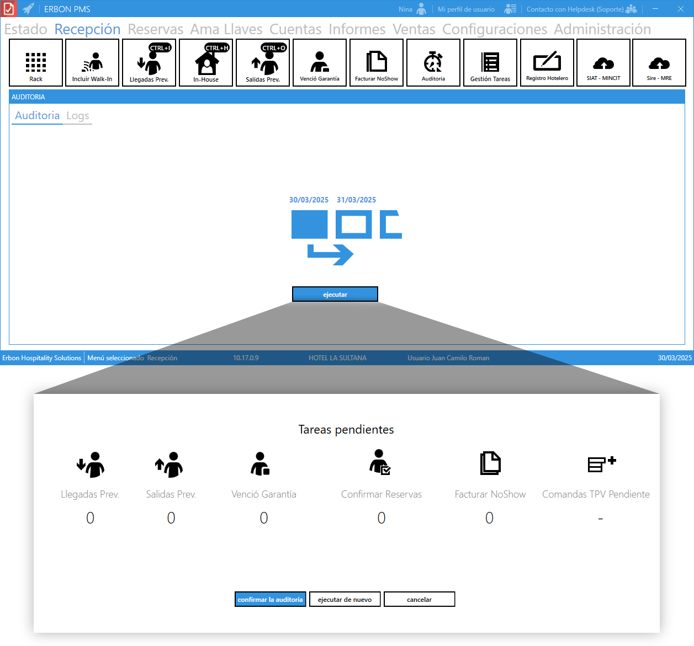

Auditoria¶
Es una herramienta esencial en la gestión hotelera que permite garantizar que todas las operaciones clave del día se han realizado correctamente antes de cerrar la jornada y avanzar al siguiente ciclo operativo en el sistema.
¿Qué significa "cambiar al siguiente día operativo"?¶
En los sistemas de gestión hotelera (PMS - Property Management System), el cambio de día no es solo un cambio en la fecha del calendario. Es un proceso administrativo y contable que impacta diferentes áreas del hotel, como la recepción, la contabilidad y la gestión de habitaciones.
Este proceso es crucial porque:
- Cierra oficialmente el día anterior, asegurando que todas las transacciones han sido registradas.
- Prepara el sistema para las nuevas operaciones del siguiente día, incluyendo llegadas, salidas y disponibilidad de habitaciones.
- Actualiza reportes financieros, generando balances de ingresos y egresos.
- Evita inconsistencias en la asignación de habitaciones, evitando sobreventas o registros erróneos.
¿Por qué es importante la auditoría antes del cambio de día?¶
El panel de auditoría funciona como un checklist que verifica que todas las tareas críticas del día hayan sido completadas correctamente antes de cerrar la jornada. Esto ayuda a evitar errores que podrían afectar la operación del hotel.
Si el cambio de día se realiza sin haber cumplido todas las tareas pendientes, pueden surgir problemas como:
- Reservas mal registradas o sin confirmar, lo que afecta la disponibilidad de habitaciones.
- Check-ins y check-outs incorrectos, lo que puede causar ocupaciones fantasma o sobreventas.
- Facturas no generadas o mal registradas, lo que impacta la contabilidad y reporte financiero.
- Cuentas pendientes en restaurantes o servicios adicionales, afectando los ingresos del hotel.
Por esta razón, el panel de auditoría en recepción permite a los empleados de recepción verificar en un solo lugar si todas las acciones necesarias se han completado correctamente antes de proceder con el cierre del día y cambio de fecha en el sistema.
¿Cómo se usa el panel de auditoría en recepción?¶
El panel muestra diferentes categorías de tareas pendientes, como:

-
Llegadas Previstas Indica la cantidad de reservas que deberían hacer check-in en el día, pero que aún no han llegado.
- Ayuda a identificar clientes que no se han presentado.
- Permite hacer seguimiento a posibles cancelaciones, reprogramaciones o No-Show.
- Si hay reservas en esta lista al final del día, deben revisarse para determinar si deben marcarse como No-Show o modificarse.
Ejemplo
Si el número es 5, significa que hay 5 reservas con check-in previsto hoy que aún no han llegado.
-
Salidas Previstas Muestra cuántas habitaciones deben hacer check-out hoy.
- Permite a recepción verificar quiénes deben dejar la habitación.
- Ayuda a coordinar con el equipo de limpieza para preparar las habitaciones para los próximos huéspedes.
- Si un huésped no ha salido y sigue ocupando la habitación, es necesario revisar si hay una extensión de estadía o si debe aplicarse una penalización por salida tardía (Late Check-Out).
Ejemplo
Si el número es 4, hay 4 habitaciones que deben hacer check-out hoy.
-
Venció Garantía Indica la cantidad de reservas No-Show cuyo plazo para facturar ha expirado.
- En la mayoría de los hoteles, las reservas No-Show pueden facturarse dentro de un período determinado (por ejemplo, 24 o 48 horas).
- Una vez vencido ese plazo, ya no se puede cobrar al cliente, y la reserva queda como una pérdida para el hotel.
- Sirve para controlar las reservas perdidas y evitar omisiones en la facturación.
Ejemplo
Si el número es 0, significa que no hay reservas No-Show con garantía vencida.
-
Confirmar Reservas Indica cuántas reservas están pendientes de validación.
- Algunas reservas pueden requerir confirmación manual antes de ser registradas.
- Puede incluir reservas hechas por agencias, empresas o clientes que aún no han enviado documentación o pago.
- Ayuda a evitar errores y asegura que solo se mantengan reservas confirmadas y garantizadas.
Ejemplo
Si el número es 3, significa que hay 3 reservas que aún no han sido confirmadas.
-
Facturar No-Show
Muestra cuántas reservas deberían haberse cobrado como No-Show.- Si un huésped no llega y su reserva tenía política de No-Show, el hotel puede facturar el monto correspondiente.
- Esta sección permite verificar si se han facturado correctamente los No-Show pendientes.
- Si quedan registros aquí, es posible que haya un error en la facturación o que alguien haya olvidado aplicarla.
Ejemplo
Si el número es 2, significa que hay 2 reservas No-Show que aún no han sido facturadas.
-
Comandas TPV Pendiente
Indica la cantidad de consumos en restaurante o bar que aún no han sido cobrados o asignados a una habitación.- Se refiere a cargos pendientes en el sistema TPV (Terminal de Punto de Venta) del hotel.
- Puede ser un consumo que aún no se ha agregado al folio de un huésped o que falta registrar como pagado.
- Ayuda a evitar pérdidas económicas por consumos no facturados.
Ejemplo
Si el número es 1, significa que hay 1 comanda de restaurante pendiente de cobrar o asignar.
Consejo
Antes de confirmar la auditoría, siempre revisar que cada punto esté resuelto para evitar errores operativos y financieros en la gestión del hotel.